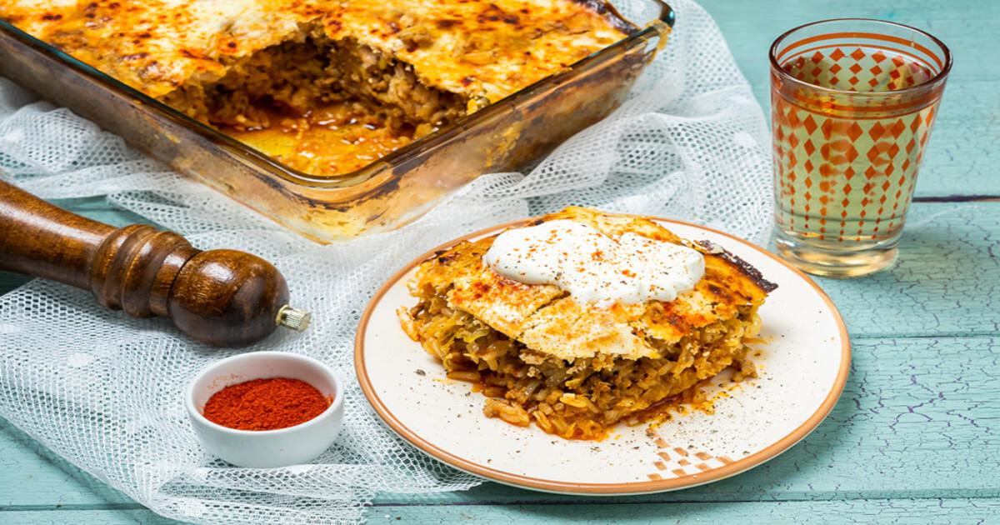

Főételek

Kolozsvári Káposzta
Egy ízletes káposztás fogás, melyben savanyú káposztát és húsos tölteléket használnak, majd sütik vagy főzik.
1450 Ft
Töltött paprika
Egy további hagyományos magyar étel, ahol paprikát töltik meg húsos vagy rizses töltelékkel, majd paradicsomszósszal főzik.
1200 Ft
Töltött káposzta
Egy hagyományos magyar fogás, ahol káposztaleveleket töltik meg fűszeres húsos töltelékkel és paradicsomszósszal főzik.
1680 FtRakott Burgonya
Egy réteges burgonyaétel, amelyben a burgonyát sajttal és hússal vagy sonkával rétegezik, majd sütik.
1480 Ft